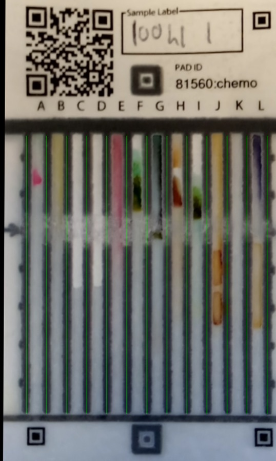
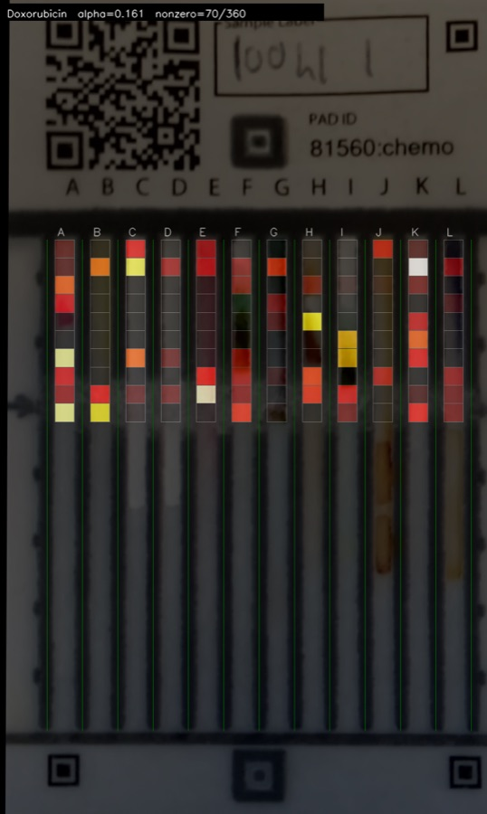

Research Agents · Appendix
A working proof of concept: an agent answers questions about a real Notre Dame service by reading the service's own ontology and API, with no UI and no per-endpoint code.
Built to extend the Paper Analytical Devices work of James Sweet, on our team.
Paper Analytical Devices (PAD) is a Notre Dame service for screening substandard and falsified medicines: a paper card with twelve reagent lanes, a sample swiped across it produces a color pattern, and a neural network reads the pattern to identify the drug or flag a bad batch. It already publishes two machine-readable self-descriptions, an OWL/RDF ontology (the domain) and an OpenAPI spec (the calls), which is exactly what makes it an ideal connector: there is nothing to hand-integrate.
The agent is given no hand-written knowledge of PAD. At startup it fetches the service's own ontology and OpenAPI spec, places both in context, and receives a single generic, read-only tool: pad_get(path, query). From there it turns a plain-English question into whatever sequence of GET calls it needs, composes and aggregates the results, and answers. The whole connector is about 180 lines and calls nothing but the model and the live API.
A portal would be a page of forms and tables someone had to design, build, and maintain for each view a researcher might want.
The connector reads the service's self-description and answers questions no one built a screen for, including joins and counts a portal would never have offered a button for.
It is tempting to call PAD the easy case because it already publishes an ontology and an OpenAPI spec. Read it the other way round: that small ontology is exactly why an agent can reason over PAD reliably. The aim is not to make the AI clever enough to guess at undescribed sources, reasoning directly over raw, unlabelled data is measurably less accurate and often needs a human in the loop to catch the mistakes. The aim is the reverse: give every API, database, and dataset a small ontology, which is cheap to author and is the thing that makes the AI's reasoning trustworthy. Where a source has none, a connector's first job is to help produce one, once, so that every agent afterward reasons over the data reliably instead of re-interpreting it on every query. PAD is not the case to move past; it is the shape we want everywhere.
The input is a photo of one physical PAD card, nothing else, no portal. The card prints a QR code that encodes its ID (the sample_id in the API), so a single photo is enough to start.


The two pictures come from two separate external sources, which the agent composed:
The live PAD API (the connector): the card record and its ID, the project and quantity metadata, and the rectified card image (left).
A federated PAD knowledge bundle (the federation): which concentration model applies, the card regions it relies on (the overlay, right), and how far to trust the reading.
One source is live and operational; the other is an accrued knowledge base from the group's own federation, which the agent located through the federation index and was authorized to read. (Here the bundle is the team's own; cross-group discovery — finding a bundle another lab published — is the next milestone.) The agent itself ran on a general-purpose LLM (Claude in this run) and is model-agnostic, so the same connector works with a different model. The concentration model whose attention is shown on the right is a sparse per-drug regressor (Lasso / PLS) that lives in the knowledge bundle.
From that single photo, the loop runs. Each piece below is real — the API calls were made live and the model statistics come straight from the bundle — composed into the answer an agent with both in reach would give:
81560:chemo.The answer is not just a number. It shows where on the card the model looks and how far to trust it — and that trust comes from the knowledge bundle's own validated model statistics (accuracy measured on held-out, HPLC-calibrated data), not from the agent's own confidence. Every claim traces to a source: the card record and image from the live API, the model and its attention map from a knowledge bundle the agent discovered and was authorized to read. No UI, no per-endpoint code, and the two halves, live data and accrued expertise, composed into one explainable result.
Two more real runs against the live PAD API. Each ends with the endpoints the agent actually called, so every answer is auditable.
There are 35 projects (the IDs are not perfectly sequential; a few numbers are absent). A sample of them and what they test for:
AMR Kenya — antimicrobial-resistance antibiotics (amoxicillin, ampicillin, azithromycin, ceftriaxone, ciprofloxacin, doxycycline). chemoPAD — chemotherapy drugs (doxorubicin, cisplatin). The FHI projects — broad antibiotic and TB panels. 2024TB — tuberculosis drugs (ethambutol, isoniazid, pyrazinamide, rifampicin). Parkinson — levodopa, carbidopa, amantadine, pramipexole. Several idPAD / Veripad projects — drug-identification panels.
Calls made: /api/v2/projects (+ pagination). The agent discovered the pagination parameters itself from the spec.
Six trained networks. The FHI360 models identify a 21-item panel (amoxicillin, ampicillin, ciprofloxacin, rifampicin and more); the MSH Tanzania model covers common APIs and excipients; two concentration models estimate percent strength instead of identity; the idPAD model identifies drugs of abuse.
The FHI360 networks identify amoxicillin, and a project that tests for it is AMR Kenya — whose own notes even mention using the “FHI-360 PAD reader,” tying the project directly to those networks.
Calls made: /api/v2/neural-networks, /api/v2/projects. The link between the two was reasoned by the agent, not coded.
No one wrote code for “count the projects,” “page through the list,” or “match a network to a project by shared drug.” The agent did all of it by reading a self-describing service and one generic tool. That is the connector-agent claim, demonstrated against a real service, and PAD did not have to change to make it work.
That is the point of the ecosystem we are proposing to build and fund. PAD is already self-describing, so making it a discoverable connector turns an existing service into something every research agent can find and query, extending James's work rather than replacing it, and doing it in a way that stays portable across whichever agent a researcher brings.
Verify it yourself. The service really is self-describing: read PAD's live ontology and its API documentation. This connector is read-only and calls only those public endpoints.
Credits. The Paper Analytical Devices service is developed by James Sweet and the PAD team at Notre Dame. The annotated-ChemoPAD concentration analysis and the Lasso active-region map shown above are the work of Maximilian Wilfinger, Priscila Moreira, Miriam Mike, and Chris Sweet. The near-infrared spectroscopy-fusion work referenced is by Miriam Mike, Pat Flynn, Chris Sweet, and Marya Lieberman. This effort is overseen by Chris Sweet, Center for Research Computing, University of Notre Dame.